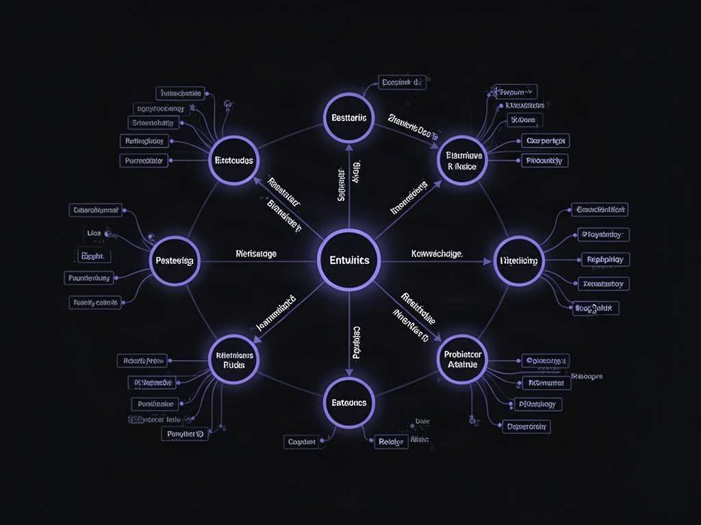
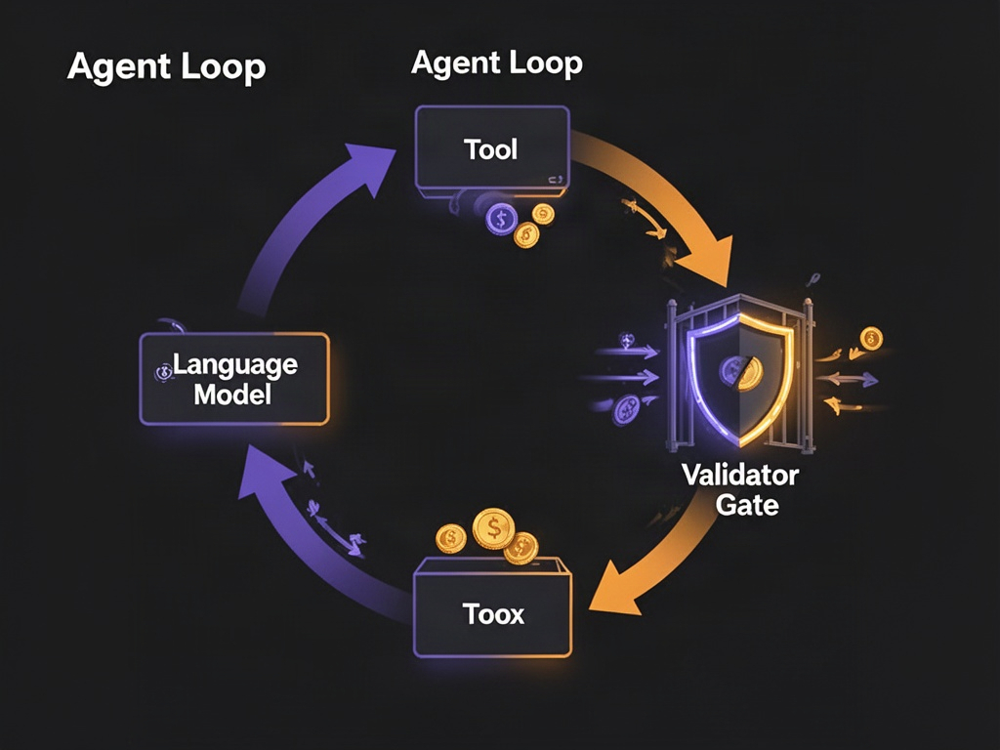

Seu agente de IA acabou de aprovar o segundo reembolso do mesmo pedido. Ninguém escreveu um bug — o LLM só achou plausível. E é aí que mora o problema que quase ninguém está resolvendo direito: modelos de linguagem são probabilísticos por natureza, e probabilidade não conhece a palavra "não".
A resposta pra isso não é um prompt mais esperto. É trazer de volta uma tecnologia que o mundo da IA deu por morta nos anos 80 — e casá-la com os LLMs de hoje. O nome disso é neurosymbolic AI, e é o que separa um agente que faz demo bonito de um que você deixa rodar sem torrar seu cartão de crédito.
Duas linhagens que estão colidindo agora
Pra entender por que isso importa, vale olhar duas histórias que passaram décadas separadas e só agora estão se encontrando.
Agentes. A ideia não é nova. Ela vem dos primeiros dias da IA — John McCarthy, Oliver Selfridge, o Society of Mind de Marvin Minsky. O termo "inteligência artificial" foi cunhado em 1956, quando essa turma se reuniu pra tentar adivinhar pra onde a computação ia. O conceito de agente amadureceu ali: algo que percebe, decide e age. É exatamente o que estamos vendo agora, só que com um motor novo por baixo.
Ontologias. Essa é ainda mais antiga. Foi Aristóteles quem primeiro propôs que precisávamos de uma "filosofia do ser" — categorias do que existe. Séculos depois, o filósofo Willard Van Orman Quine formalizou parte disso, e em 1993 veio a definição que até hoje captura o que grafos de conhecimento realmente são: uma especificação formal de uma conceitualização compartilhada. Traduzindo pro nosso contexto: é o modelo do mundo que você entrega ao seu agente. O universo dele é o seu domínio — pedidos, clientes, representantes, e como tudo isso se relaciona.
A convergência é essa: algo probabilístico (o LLM) amarrado a algo formal (a ontologia). Neural network conectada a IA simbólica. Daí o nome que você está ouvindo em todo lugar — neurosymbolic AI.
Alucinação não é bug, é a feature
Todo mundo se preocupa com hallucination como se fosse um defeito a ser exterminado. Mas é o contrário: é a natureza da coisa. LLMs imaginam o que pode não existir — assim como a gente. O ser humano inventa coisas que ainda não são reais e depois as constrói. O modelo faz uma versão disso a cada token.
O ponto não é matar a imaginação do modelo. É colocar guardrails em volta dela. E é aqui que a IA simbólica, dada por morta, volta com tudo.

O que é uma ontologia, sem o mistério
Apesar da palavra intimidante, a estrutura é simples: entidades, suas propriedades, e as relações entre elas. É um grafo. Nada mais.
Grafos surgiram justamente quando ficou claro que enfiar tudo em tabelas relacionais era restritivo demais. Quer adicionar um campo novo num banco relacional? Adiciona uma coluna, refaz a estrutura, reza. Num grafo, você só pendura mais um nó, mais uma propriedade, mais uma relação. Cresce orgânico.
Top-down ou bottom-up
Existem dois caminhos pra construir a sua:
- Top-down: junta os especialistas, eles analisam o domínio e desenham as entidades — "temos pedidos, clientes, representantes, essas são as propriedades, essas as relações". É como se fazia expert systems nos anos 80.
- Bottom-up: você observa o que acontece na prática (reações de clientes, eventos reais) e vai adicionando ao grafo conforme aparece.
E você não precisa começar do zero. Existem taxonomias maduras há 15-20 anos: schema.org traz um vocabulário inteiro de termos e relações, FOAF (friend of a friend) modela redes sociais, o Dublin Core descreve documentos e artigos. Aliás, a Wikipedia roda sobre uma ontologia chamada DBpedia — quando você busca lá, está consultando um grafo gigante. Esse maquinário já está embaixo de muita coisa que você usa todo dia.
A lição esquecida do inverno da IA
Vale um aviso histórico. Nos anos 80, todo mundo apostou que expert systems — IA simbólica pura, baseada em regras — eram o caminho. Empresas nasceram, milhões foram gastos, o Japão lançou o projeto Fifth Generation, tinha gente colocando os filhos pra aprender japonês por causa disso.
Não escalou. E veio o inverno da IA.
Redes neurais, por sua vez, já existiam desde os anos 60 — e também não escalavam, até a NVIDIA aparecer fazendo GPUs pra videogame e alguém perceber que dava pra usar aquele poder de cálculo pra treinar as redes. É por isso que estamos aqui. A moral: nenhuma das duas abordagens sozinha bastou. O futuro é a soma.

Agentes são loops — e loops são tudo
"Agente" virou sinônimo de "loop", e com razão — mas loops não têm nada de novo. Em 1966, Corrado Böhm e Giuseppe Jacopini provaram algo elegante: qualquer linguagem de programação é equivalente a qualquer outra se tiver três coisas — sequência (statement A, B, C), condicional (if/then) e iteração (o loop). Com esses três, a linguagem é Turing-completa: consegue computar qualquer coisa computável.
É exatamente a peça que os agentes ganharam. O loop é o que fecha a equação e dá a eles a capacidade de fazer qualquer coisa que um computador faz. Mas essa mesma peça é o perigo:
- Loops quebram — todo programador já caiu num loop infinito.
- Loops derivam — quando agentes começam a conversar entre si, as coisas saem dos trilhos.
- Loops custam — a contagem de tokens sobe a cada iteração.
O padrão prático: ontologia como validador do loop
Aqui está o encaixe. Um LLM, sozinho, não faz nada — ele só prevê a próxima palavra com alta probabilidade. O que o torna útil é a tool: você dá uma ferramenta e pergunta "como isso ajuda a resolver o problema?". O modelo não executa nada — ele monta os parâmetros e devolve: "não posso rodar isso, mas sei quais são os inputs, aqui está a chamada que você precisa fazer".
Um loop de agente com Claude segue mais ou menos isso:
while True:
resp = client.messages.create(model=..., messages=..., tools=[...])
if resp.stop_reason == "tool_use":
result = run_tool(resp) # executa a ferramenta
# AQUI entra a ontologia:
if validator.check(result): # o resultado faz sentido no domínio?
messages.append(result) # segue o baile
else:
messages.append(feedback) # devolve pro LLM: "isso não bate"
# ou: chama um humano
A ideia é cercar o input com checagens. Duas camadas fazem isso muito bem:
- Pydantic na porta — Python não tem tipagem forte (
x = 20e depoisx = "olá"passa liso). Pydantic adiciona validação de tipo aos parâmetros. Garante a forma do dado. - Ontologia no balcão — depois de validar o tipo, você valida o significado: o resultado é coerente com as regras do seu domínio?
E uma regra de ouro: agentes puros devem ter zero side effects. Não deixe o agente sair alterando o banco antes de passar pela ontologia. Valide primeiro, aja depois.
O que a ontologia pega que o texto não pega
Grafos têm tecnologias auxiliares — RDFS e OWL — que ficam ao lado do grafo e permitem inferência e restrição. Alguns exemplos de por que isso é poderoso:
- Inferência via domain/range (RDFS): se "ensinar" tem domínio "professor" e alcance "aluno", então a frase "Bob ensina Scooter" te diz automaticamente que Bob é professor e Scooter é aluno. E se "todo professor é pessoa", você deriva que Bob é pessoa. Conhecimento que não estava explícito no grafo.
- Propriedade transitiva (OWL): se "ancestral" é transitiva e Sue é ancestral de Mary, e Mary de Anne, então Sue é ancestral de Anne — sem você ter dito isso.
- Propriedade funcional (OWL): "tem pai" só admite um valor. Então se o sistema diz "Bob é pai do Jim" e "BB é pai do Jim", a ontologia infere que Bob e BB são a mesma pessoa — vira uma restrição de integridade.
Agora pense nesses erros de agente, que são trivíssimos de deixar passar em texto puro e que uma ontologia barra na hora:
| Erro do agente | Como a ontologia pega |
|---|---|
| Segundo reembolso no mesmo pedido | Restrição de cardinalidade / funcional |
| Pagamento enviado ao suporte em vez do comprador | OWL disjoint: cliente e representante são entidades separadas |
| Status inventado tipo "provavelmente enviado" | Enumeração fechada: só "pago", "enviado" ou "reembolsado" |
No mundo de texto livre, o LLM devolve coisa esquisita porque é probabilístico. No mundo do grafo, o reasoner baseado na ontologia mantém o modelo nos trilhos — guardrails que o obrigam a ser honesto.
Fechando o loop
Não estamos abandonando os LLMs nem voltando pro passado. Estamos costurando as duas metades que sempre foram fortes sozinhas em coisas diferentes: a intuição probabilística das redes neurais e o rigor formal da IA simbólica. Pydantic garante a forma, a ontologia garante o sentido, e o loop do agente ganha um adulto na sala.
Se você está construindo agentes que tocam dinheiro, pedidos ou qualquer coisa que não pode dar errado silenciosamente, o caminho não é rezar pro prompt. É dar ao seu agente um modelo do mundo — e um validador que diz "não" quando a probabilidade escorrega.